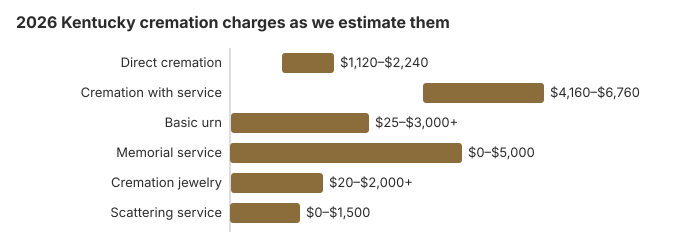

Cremation Costs in Kentucky (2026)
A Kentucky direct cremation costs about $1,600 on our estimates, and a funeral with the cremation afterward about $5,200. Kentucky cremates about 40% of its dead, well under NFDA's 63.4% national projection for 2025. The step that sets the pace here is the county coroner's permit, which is required for every cremation, so this page explains it along with prices, scattering law and what a fiscal court may pay.
Kinds of Kentucky Cremation
Direct Cremation
- Lowest price of the Kentucky choices
- No gathering first
- Taken straight to the crematory
- The family is given the ashes
- Hold a memorial whenever suits
Cremation with Service
- A full funeral, then cremation
- A viewing can be arranged
- Service at a funeral home or church
- A plain urn is usually part of it
- Closest to a traditional funeral
What a Kentucky Cremation Is Made Of
| Part of the cremation | Kentucky figure | Low to high |
|---|---|---|
| Direct cremation | $1,600 | $1,120 – $2,240 |
| Cremation with service | $5,200 | $4,160 – $6,760 |
| Basic urn | $50 – $300 | $25 – $3,000+ |
| Memorial service | $500 – $2,000 | $0 – $5,000 |
| Cremation jewelry | $50 – $500 | $20 – $2,000+ |
| Scattering service | $200 – $600 | $0 – $1,500 |
About these Kentucky numbers: they are our model's estimates, not prices gathered from Kentucky crematories, and they are not a quote or professional advice. Our approach is set out in our method with caveats in the disclaimer.
State sources: KRS 72.450; 17 KAR 4:040.

Kentucky Permits and Permissions
Four things to know before signing in Kentucky:
- Kentucky's order of who can authorize a cremation starts with someone named in a funeral planning declaration, then the surviving spouse, then the adult children acting by majority, then parents (KRS 367.93117).
- No Kentucky body may be cremated, or transported to be cremated, without a permit from the coroner of the county where the death occurred stating the cause of death (KRS 213.081). The coroner's permit is needed even when the death was expected, so ask the funeral home how quickly the local coroner usually signs.
- Once the coroner signs Section D of the VS-34 form, ask the crematory how many days it needs and whether it delivers the ashes or the family collects them.
Kentucky's Cremation Rate and Prices
Kentucky's 40% rate is 23.4 points under NFDA's 63.4% national projection for 2025. On our estimates, a direct cremation's usual range is $1,120 to $2,240, so a quote near the top is worth a second call; written General Price Lists let you check.
Cremation Resources
- Funeral Consumers AllianceNonprofit advocacy: compare cremation providers
- Cremation Jewelry GuideMemorial keepsakes and remembrance options
- Cremation vs. Burial CostsSide-by-side cost comparison
- Pet Cremation CostsOptions and prices for pet cremation and memorials
- Final Expense InsuranceCoverage options to help pay for cremation costs
Compare Funeral Costs
- Average Funeral Cost in 2026National cost breakdown with real prices
- Cremation vs. Burial Cost ComparisonSide-by-side price comparison to help you decide
- Funeral Cost BreakdownEvery line item explained: know what you're paying for
- Cheapest Funeral OptionsLower-cost alternatives, with typical price ranges
- Direct Cremation: Most Affordable OptionNFDA 2023 median $2,645 with a family-supplied container (latest available)
- How to Compare Funeral PricesStep-by-step guide to getting the best price
Cheaper Cremation in Kentucky
Kentucky savings worth asking about:
- Collect several General Price Lists. Every Kentucky funeral home must give you one; compare the direct cremation line, which has to say what it includes.
- Ask for direct cremation on its own. If a provider quotes a package, ask for the price of direct cremation alone and what the transfer, container and crematory fee each cost.
Frequently Asked Questions
What is the price of a Kentucky cremation?
Our estimate is about $1,600 for a direct cremation in Kentucky and about $5,200 with a funeral and viewing first.
Which kinds of cremation can a Kentucky family pick?
Kentucky providers sell three. A direct cremation, about $1,600, has no ceremony; a cremation with a memorial afterward lets the family choose the date; and a full funeral before the cremation runs about $5,200.
What paperwork does Kentucky require?
There is no Kentucky waiting period. Before a cremation, a provisional death certificate has to be filed and the coroner of the county where the death occurred has to issue the permit (KRS 213.081; KRS 213.076(7)).
Problems with any of these steps can be reported to the Kentucky Board of Embalmers and Funeral Directors (502-426-4589).
Where may ashes go in Kentucky?
Kentucky law names the places. Under KRS 367.97524(2) the remains may go in a grave, crypt or niche, be scattered in a cemetery's scattering area, or be scattered on private land with the owner's consent; keeping them at home or moving them needs no permit.
A crematory may dispose of unclaimed remains after two years. At Mammoth Cave National Park, as at other federal parks, scattering needs a permit or a designated site (36 CFR 2.62). The Board (502-426-4589) takes complaints.
Why do Kentucky families choose cremation?
Cost is part of it: on our estimates a Kentucky cremation is about $4,800 cheaper than a traditional burial, and the memorial can wait for a convenient date.
How soon can a Kentucky cremation happen?
Timing in Kentucky depends on the papers, not a waiting period: the provisional death certificate must be filed and the coroner must issue the permit (KRS 213.081; KRS 213.076(7)), and a coroner's investigation adds time.
After that, the Cremation Association of North America puts the cremation itself at about 30 minutes to over two hours, depending on the body, before cooling and processing. A crematory may hold an unembalmed body only if it has refrigeration (KRS 367.97511).
Can a Kentucky cremation follow a funeral?
Yes. On our numbers a Kentucky funeral and viewing with cremation afterward costs about $5,200, usually $4,160 to $6,760; direct cremation without a ceremony is about $1,600.
A cheaper route is to cremate first and hold the memorial later at a church or home. Since only crematories with refrigeration may hold an unembalmed body (KRS 367.97511), ask where the body will stay before the service.
More for Kentucky
How the Kentucky coroner's permit works on paper
In Kentucky the coroner's cremation permit is not a separate document. It is Section D of the Provisional Report of Death, form VS-34, which also serves as the burial-transit permit. The funeral director, or the family member acting as one, has the coroner of the county where the death occurred complete Section D on the original form, then gives that copy to the crematory. Crematories will not accept a body without the coroner's authorization (Kentucky Registrar Guidelines; checked October 29, 2026).
- After the cremation: the crematory completes Section E and sends the form to the registrar of the county where the death occurred, who keeps it for five years.
- Carrying the ashes: no further permit is needed to move or scatter cremated remains anywhere in the state.
Kentucky cremation oversight and county help
The Kentucky Board of Embalmers and Funeral Directors (502-426-4589) licenses crematories and funeral homes and takes complaints about them.
Kentucky is not among the nine states the Funeral Consumers Alliance lists for restricting family-directed care, so once the coroner's permit is issued the family may work with the crematory on its own.
No waiting period applies, but a provisional death certificate must be filed and the coroner's permit issued before cremation (KRS 213.081; KRS 213.076(7)).
Unclaimed and indigent deaths
Kentucky has no statewide program. When nobody claims a body, the fiscal court, or a consolidated or urban-county government, may pay for burial or cremation but does not have to (KRS 72.450; 17 KAR 4:040); under the same rules the Kentucky Department of Veterans Affairs can reimburse up to $1,000 toward an indigent veteran's cremation. The $255 Social Security death benefit, paid to an eligible spouse or child, leaves most of a $1,600 direct cremation unpaid.
Veterans
Cremated veterans keep their burial benefit, with the niche or plot and marker free at Camp Nelson (859-885-5727), Lebanon (270-692-3390) or Mill Springs (859-885-5727) National Cemetery; see cem.va.gov. Kentucky also runs five state veterans cemeteries that take urns: Central (270-351-5115), North (859-823-0720), Northeast (606-929-5354), Southeast (606-672-2750) and West (270-889-6106). Calling the nearest one before choosing a private niche can save the family the whole cost of the space, and the cemetery can say which papers it needs.
Kentucky to-do list
- Have each provider list the transfer, container and crematory fee separately.
- Ask which coroner will sign Section D and how long it usually takes.
- If nobody can pay, ask the fiscal court whether it covers unclaimed cremations; KRS 72.450 leaves it optional.
- Keep the Board's number, 502-426-4589, handy before you pay.